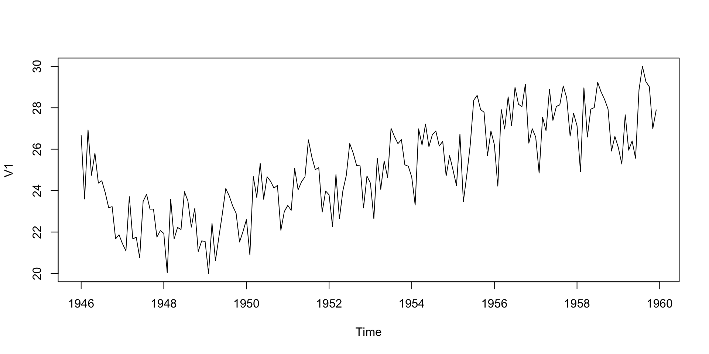
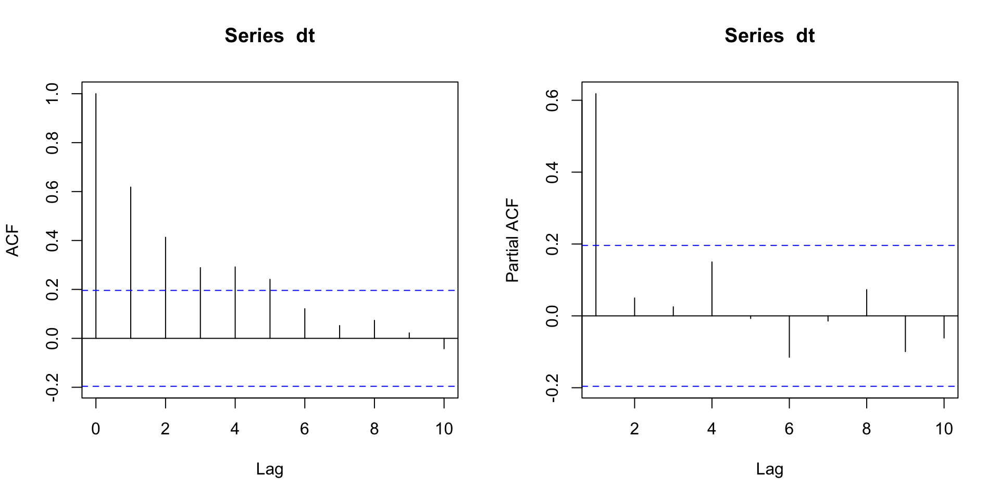
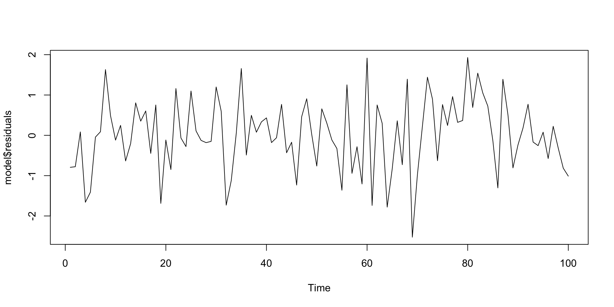
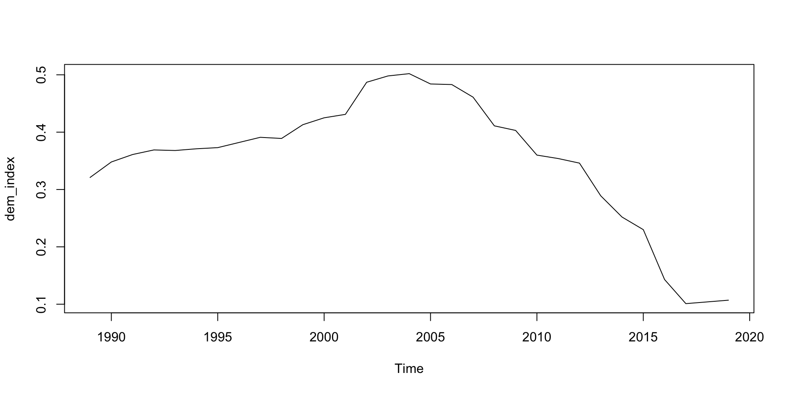
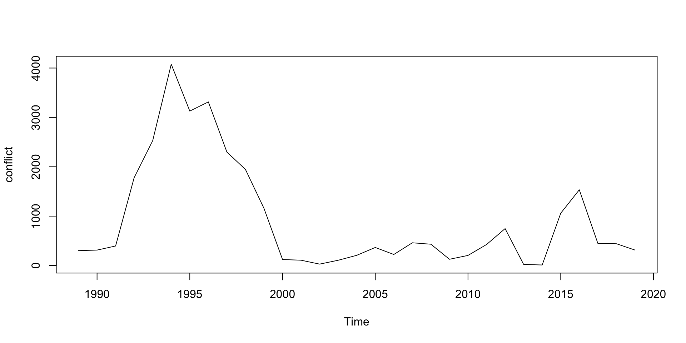
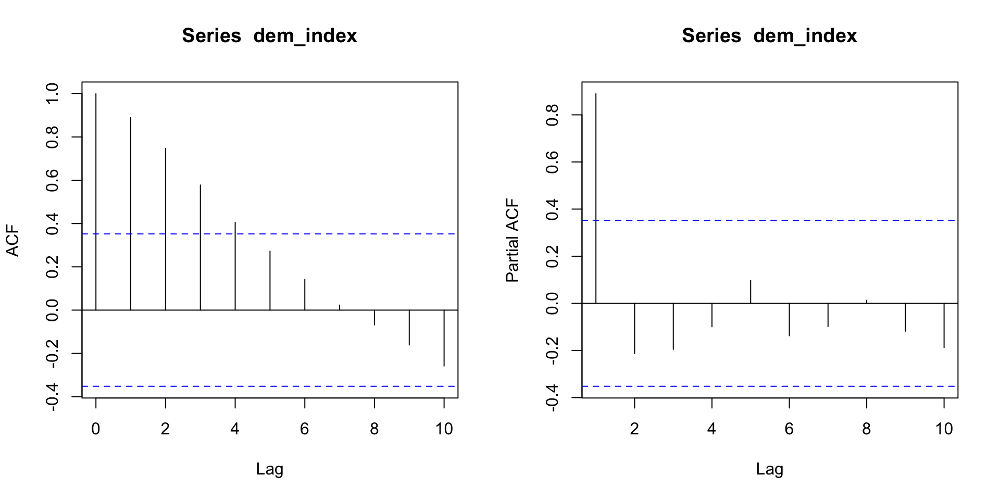
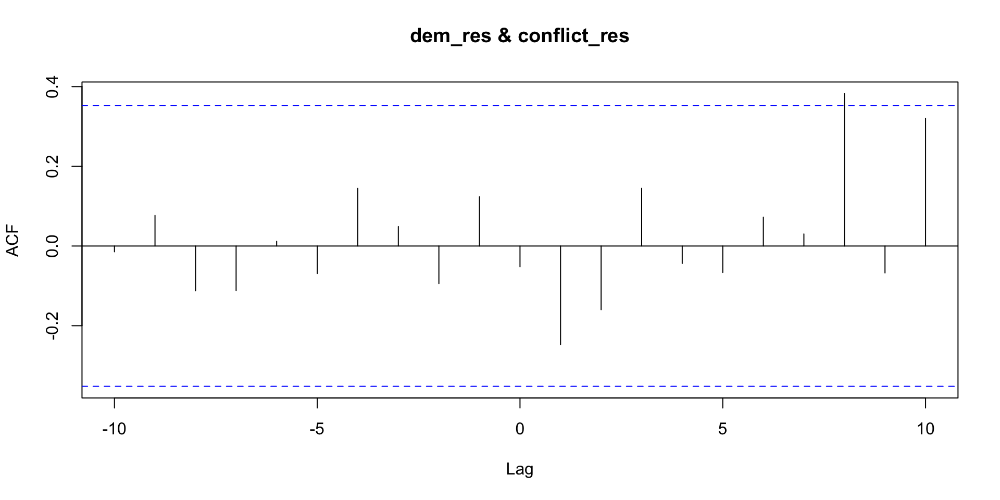
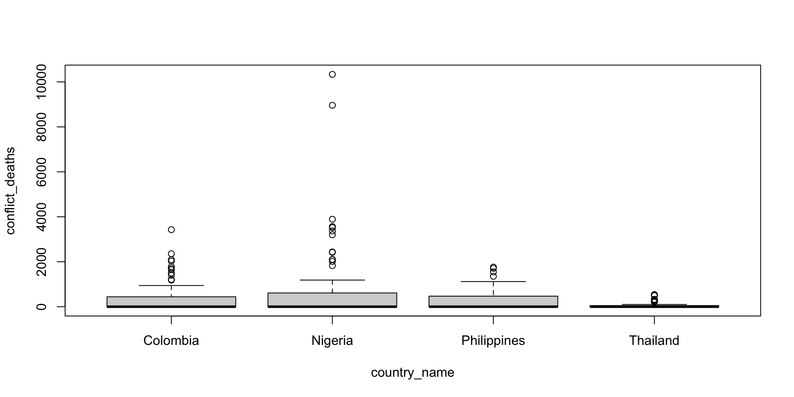

Session 6 - Time series
Today
Time series
Multi-level model
Exercises
Q&A research paper
Time series
What is a time series?
Repeated observations
Ordered by time
One observation per time unit
Stationary
Stationary means no trend in the time series

Stationary II
Dependence
Relationship between an observation at time t and an observation at time t-h
Different processes:
White Noise
Moving Average (MA)
Autoregression (AR)
Integration (example, Random Walk)
Identification

Estimation
arima(time series, order(p,d,q)):
time series: name of your time series object
order: specify the ARIMA elements
- p: order of the autoregression
- d: order of the integration
- q: order of the moving average
Estimation II
Diagnostic
Check that the residuals of your model are white noise
Box-Ljung test
data: model$residuals
X-squared = 22.703, df = 20, p-value = 0.3036
Bivariate time series
Bivariate time series
Analysis of two time series
Evaluates the causality between the two variables:
Prewhitening
Granger causality
Error correction models of cointegration (see Jan Rovny notes)
Data
library(vdemdata)
data("vdem")
demo <- subset(vdem, country_name == "Türkiye" & year>1988 & year < 2020)
library(readr)
ucdp <- read_csv("https://ucdp.uu.se/downloads/ged/ged201.csv")
conf <- subset(ucdp, country == "Turkey")
conf_year <- aggregate(best ~ year, data = conf, FUN = sum)
df <- merge(demo, conf_year, by = "year", all.x = TRUE)
df$best[is.na(df$best)] <- 0 # no conflict = 0
#v2x_libdem = democracy
#best = conflict deathsPlotting time series

Plotting time series

Prewhitening
Start by doing the identification, estimation and diagnostic check.
Once this is done, you can check the cross-correlation of the residuals of the two time series
Identification
Augmented Dickey-Fuller Test
data: dem_index
Dickey-Fuller = -1.5275, Lag order = 3, p-value = 0.7547
alternative hypothesis: stationary
Estimation
Call:
arima(x = dem_index, order = c(1, 1, 0))
Coefficients:
ar1
0.5109
s.e. 0.1539
sigma^2 estimated as 0.0006066: log likelihood = 68.39, aic = -132.79
Call:
arima(x = conflict, order = c(1, 1, 0))
Coefficients:
ar1
0.1391
s.e. 0.1777
sigma^2 estimated as 394447: log likelihood = -235.86, aic = 475.71Diagnostic
Cross-correlation

Granger causality
grangertest(DV ~ IV, order=p, data):
DV: dependent variable
IV: independent variable
order = p: p is the number of lags you want to take into account in the regression
data: name of your dataset
Granger causality test
Model 1: best ~ Lags(best, 1:4) + Lags(v2x_libdem, 1:4)
Model 2: best ~ Lags(best, 1:4)
Res.Df Df F Pr(>F)
1 18
2 22 -4 0.621 0.6534Granger causality test
Model 1: v2x_libdem ~ Lags(v2x_libdem, 1:4) + Lags(best, 1:4)
Model 2: v2x_libdem ~ Lags(v2x_libdem, 1:4)
Res.Df Df F Pr(>F)
1 18
2 22 -4 1.3595 0.287TSCS
TSCS
Times series for more than one unit
Problems of bias estimation with OLS:
Unit effects
Standard errors estimation
Data
library(WDI)
library(vdemdata)
library(readr)
library(dplyr)
countries <- c("Turkey", "Nigeria", "Colombia", "Philippines", "Thailand") # example set
# --- Democracy (V-Dem) ---
data("vdem")
demo <- vdem %>%
filter(country_name %in% countries) %>%
select(country_name, year, v2x_libdem)
# --- Conflict (UCDP GED summary by country-year) ---
ucdp <- read_csv("https://ucdp.uu.se/downloads/ged/ged201.csv")
conf <- ucdp %>%
filter(country %in% countries) %>%
group_by(country, year) %>%
summarise(conflict_deaths = sum(best, na.rm = TRUE), .groups = "drop")
df <- demo %>%
left_join(conf, by = c("country_name" = "country", "year" = "year"))
df$conflict_deaths[is.na(df$conflict_deaths)] <- 0
df <- df %>%
filter(year > 1960)Unit effects
You need to check for unit effects before conducting your analysis.
You can do an ANOVA test.
If you have unit effects, you can use fixed or random effects
library(plm)
data<-pdata.frame(df,index=c("country_name","year"))
coplot(conflict_deaths~year|country_name, type="l",data=data)

Df Sum Sq Mean Sq F value Pr(>F)
country_name 3 22671546 7557182 6.915 0.000171 ***
Residuals 256 279775873 1092875
---
Signif. codes: 0 '***' 0.001 '**' 0.01 '*' 0.05 '.' 0.1 ' ' 1Fixed or Random effects
plm(formula, data, index=c("unit","time"), model):
formula: Y~X
data: name of the dataset
index= c(“unit”,“time”): specify the name of the unit and time variable
model: “within” for fixed effects estimator and “random” for random effects
Example fixed effects I
fe<-plm(conflict_deaths~v2x_libdem,
data=data,
index=c("country_name","year"),
model="within")
summary(fe)Oneway (individual) effect Within Model
Call:
plm(formula = conflict_deaths ~ v2x_libdem, data = data, model = "within",
index = c("country_name", "year"))
Balanced Panel: n = 4, T = 65, N = 260
Residuals:
Min. 1st Qu. Median 3rd Qu. Max.
-1309.36 -477.81 -147.86 314.24 8897.93
Coefficients:
Estimate Std. Error t-value Pr(>|t|)
v2x_libdem 3167.8 520.0 6.092 4.088e-09 ***
---
Signif. codes: 0 '***' 0.001 '**' 0.01 '*' 0.05 '.' 0.1 ' ' 1
Total Sum of Squares: 279780000
Residual Sum of Squares: 244230000
R-Squared: 0.12705
Adj. R-Squared: 0.11336
F-statistic: 37.1126 on 1 and 255 DF, p-value: 4.0883e-09Example fixed effects II
Call:
lm(formula = conflict_deaths ~ v2x_libdem + factor(country_name) -
1, data = data)
Residuals:
Min 1Q Median 3Q Max
-1309.4 -477.8 -147.9 314.2 8897.9
Coefficients:
Estimate Std. Error t value Pr(>|t|)
v2x_libdem 3167.8 520.0 6.092 4.09e-09 ***
factor(country_name)Colombia -795.2 234.4 -3.392 0.000805 ***
factor(country_name)Nigeria 203.8 164.2 1.241 0.215710
factor(country_name)Philippines -588.2 190.3 -3.091 0.002220 **
factor(country_name)Thailand -623.5 165.8 -3.760 0.000210 ***
---
Signif. codes: 0 '***' 0.001 '**' 0.01 '*' 0.05 '.' 0.1 ' ' 1
Residual standard error: 978.7 on 255 degrees of freedom
Multiple R-squared: 0.2981, Adjusted R-squared: 0.2844
F-statistic: 21.66 on 5 and 255 DF, p-value: < 2.2e-16Example random effects
re<-plm(conflict_deaths~v2x_libdem,
data=data,
index=c("country_name","year"),
model="random")
summary(re)Oneway (individual) effect Random Effect Model
(Swamy-Arora's transformation)
Call:
plm(formula = conflict_deaths ~ v2x_libdem, data = data, model = "random",
index = c("country_name", "year"))
Balanced Panel: n = 4, T = 65, N = 260
Effects:
var std.dev share
idiosyncratic 957767.3 978.7 0.858
individual 157999.9 397.5 0.142
theta: 0.7079
Residuals:
Min. 1st Qu. Median 3rd Qu. Max.
-1105.61 -376.33 -189.45 249.08 9105.92
Coefficients:
Estimate Std. Error z-value Pr(>|z|)
(Intercept) -421.65 251.07 -1.6794 0.09307 .
v2x_libdem 3061.62 512.63 5.9724 2.338e-09 ***
---
Signif. codes: 0 '***' 0.001 '**' 0.01 '*' 0.05 '.' 0.1 ' ' 1
Total Sum of Squares: 281710000
Residual Sum of Squares: 247490000
R-Squared: 0.12146
Adj. R-Squared: 0.11806
Chisq: 35.6693 on 1 DF, p-value: 2.3381e-09Comparing FE and RE
Should you choose fixed or random effects? You can do a Hausman test if you do not know which one to choose.
Panel Corrected Standard Errors
With TSCS, you also have a lot of problems with SE.
One solution proposed is to use Panel Corrected Standard Errors on OLS.
pcse(model, groupN, groupT):
model: name of the lm object
groupN: name of the unit variable
groupT: name of the time variable
Example
library(pcse)
ols<-lm(conflict_deaths~v2x_libdem,
data=data)
pcse<-pcse(ols,groupN=data$country_name,groupT=data$year)
summary(pcse)
Results:
Estimate PCSE t value Pr(>|t|)
(Intercept) -191.6081 153.4621 -1.248570 2.129543e-01
v2x_libdem 2223.2314 456.3394 4.871882 1.931036e-06
---------------------------------------------
# Valid Obs = 260; # Missing Obs = 0; Degrees of Freedom = 258.PCSE and LDV
Using PCSE only deals with the SE errors but does not take into account unit effects.
One solution is to add a lag dependent variable into the OLS which will capture the history of the dependent variable into the model and thus take into account some of the unit effects.
In R, you need to compute first the lagged dependent variable before the OLS and PCSE. You can use the lag() function.
PCSE and LDV II
data<-data %>%
group_by(country_name) %>%
mutate(l.conflict_death=dplyr::lag(conflict_deaths))
data2<-na.omit(data)
ols2<-lm(conflict_deaths~l.conflict_death+v2x_libdem,
data=data2)
pcse2<-pcse(ols2,groupN=data2$country_name,groupT=data2$year)
summary(pcse2)
Results:
Estimate PCSE t value Pr(>|t|)
(Intercept) -29.9827658 102.12598915 -0.2935861 7.693149e-01
l.conflict_death 0.7639128 0.06693568 11.4126401 1.304803e-24
v2x_libdem 473.0538386 306.94742198 1.5411559 1.245286e-01
---------------------------------------------
# Valid Obs = 256; # Missing Obs = 0; Degrees of Freedom = 253.Multi-level model
Data with nested observations in larger unit
Incorporate information at the larger unit into the regression
(1|variable) to incorporate the effect
# I am simulating data, so a seed will guarantee the same simulated data every time
set.seed(1312)
data <- tibble(
region = rep(1:10, each = 100),
# 10 regions, 100 individuals each
individual_income = rnorm(1000, mean = 50000, sd = 10000),
# some control variables
education_level = rnorm(1000, mean = 16, sd = 2),
gender = sample(c("Male", "Female"), 1000, replace = TRUE),
# a random and fun control variable
number_of_pets = rpois(1000, lambda = 2)
) |>
mutate(
individual_income = scale(individual_income),
education_level = scale(education_level),
# cheating myself to significant results for regional variable
regional_effect = rnorm(10, mean = 0, sd = 2)[region] # greater SD for more variability
) |>
mutate(voted = as.integer(
runif(1000) < plogis(
0.5 + 0.25 * individual_income + 0.15 * education_level +
0.2 * (gender == "Female") + 0.1 * number_of_pets +
regional_effect
)
)
)# Fit a logistic mixed model
library(lme4)
model <-
glmer(
voted ~ individual_income + education_level + gender + number_of_pets +
(1 | region),
family = binomial,
data = data
)
summary(model)Generalized linear mixed model fit by maximum likelihood (Laplace
Approximation) [glmerMod]
Family: binomial ( logit )
Formula:
voted ~ individual_income + education_level + gender + number_of_pets +
(1 | region)
Data: data
AIC BIC logLik -2*log(L) df.resid
802.3 831.7 -395.1 790.3 994
Scaled residuals:
Min 1Q Median 3Q Max
-8.8493 -0.1220 0.2806 0.4598 6.0004
Random effects:
Groups Name Variance Std.Dev.
region (Intercept) 4.77 2.184
Number of obs: 1000, groups: region, 10
Fixed effects:
Estimate Std. Error z value Pr(>|z|)
(Intercept) 1.284278 0.722539 1.777 0.07549 .
individual_income 0.175018 0.088603 1.975 0.04823 *
education_level 0.321368 0.089695 3.583 0.00034 ***
genderMale -0.016058 0.183702 -0.087 0.93034
number_of_pets -0.002859 0.065669 -0.044 0.96528
---
Signif. codes: 0 '***' 0.001 '**' 0.01 '*' 0.05 '.' 0.1 ' ' 1
Correlation of Fixed Effects:
(Intr) indvd_ edctn_ gndrMl
indivdl_ncm 0.019
educatn_lvl 0.016 0.003
genderMale -0.143 -0.043 0.050
numbr_f_pts -0.189 -0.016 -0.044 0.071